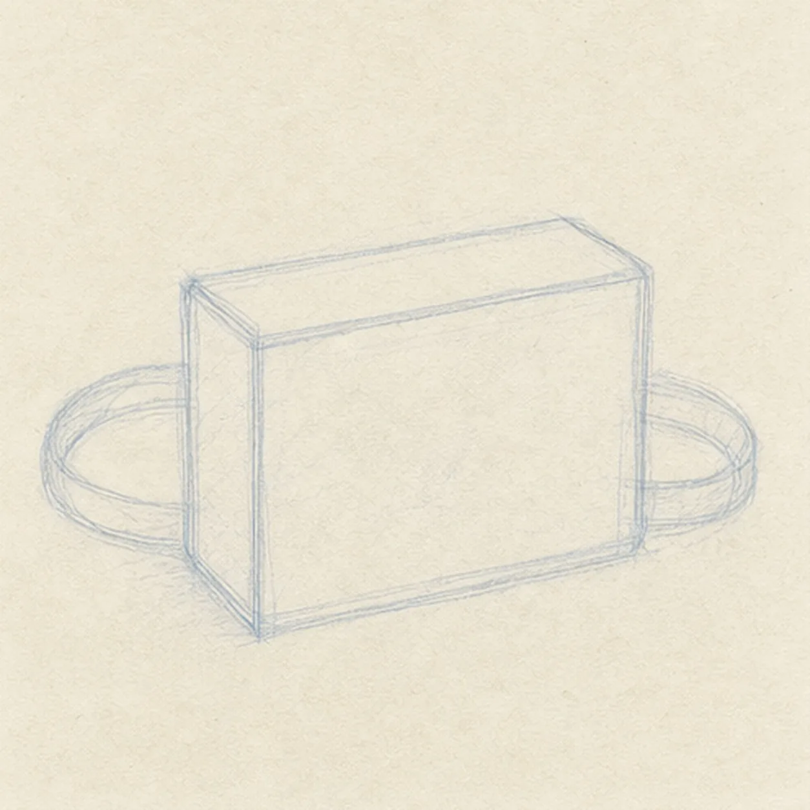
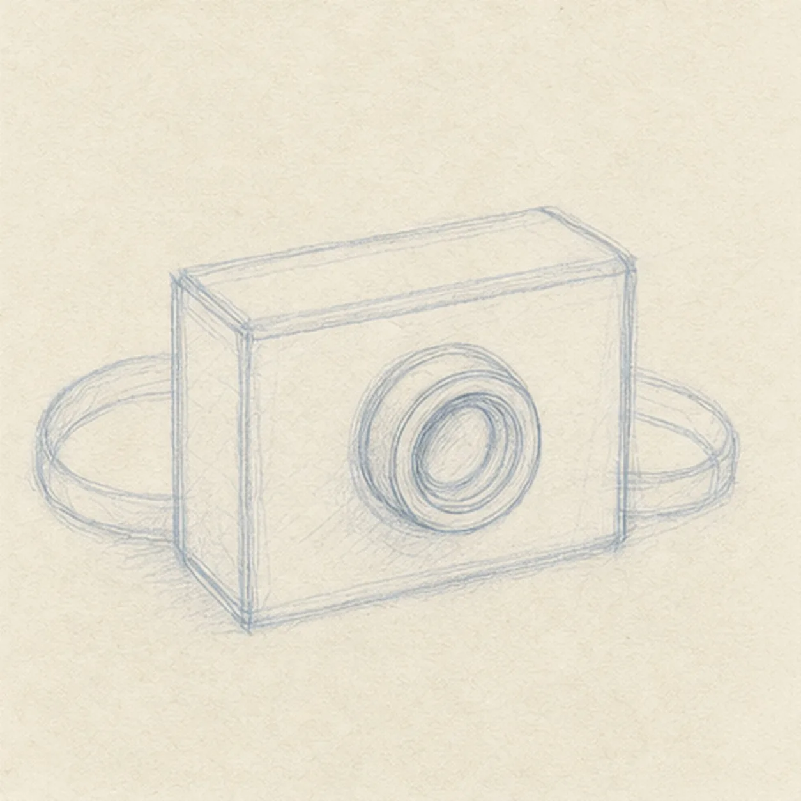
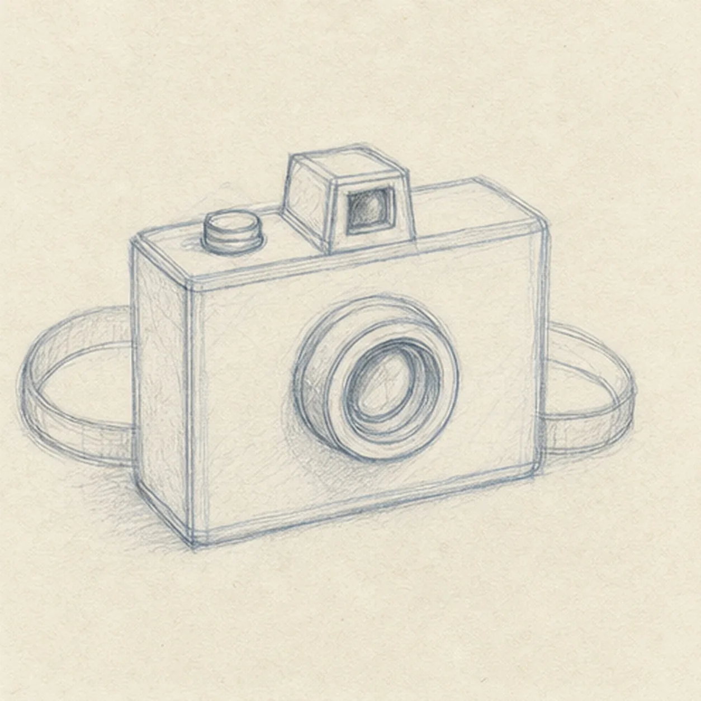
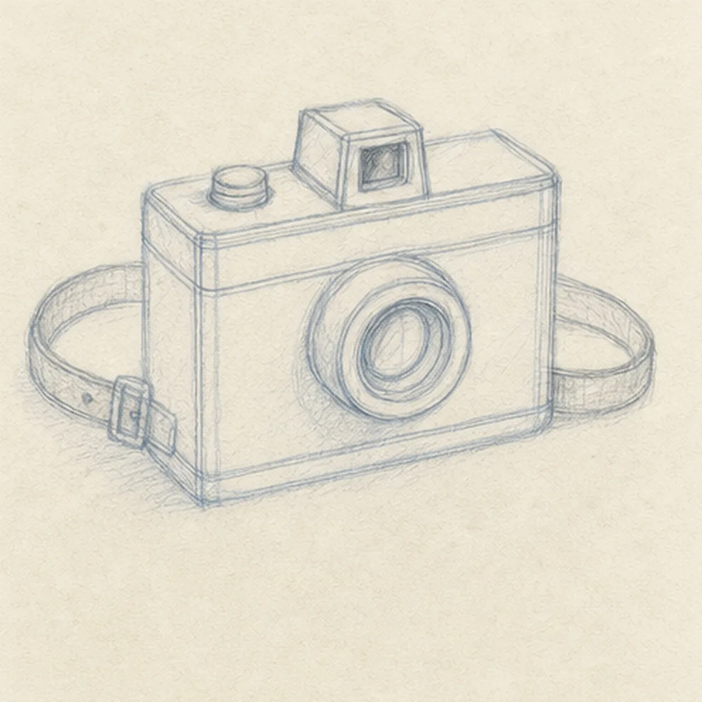
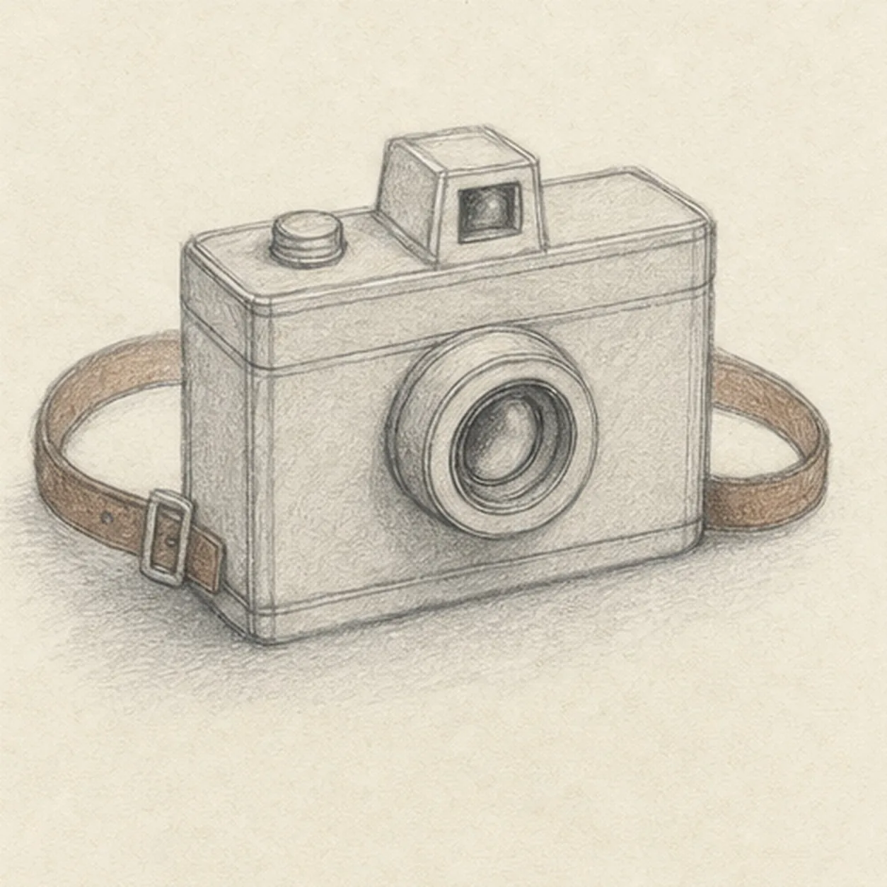

From the archive
Let's draw a vintage camera on a strap
Treat this as one small practice round: build the subject lightly, notice the shapes, then darken only the lines that help the finished sketch.
-
01

Box in the camera
Draw a light rectangular camera body with a shallow top plane, then loop a loose strap behind it.
Sketch tip: Keep the body guide light enough to adjust. Check that the top and bottom edges lean by the same small angle before darkening either one.
-
02

Center the lens
Add a round lens barrel and one outer ring to the front of the established camera body.
Sketch tip: Use a loose circle first, then correct it with a second pass. A lens reads round when its outer rings share the same center.
-
03

Build the top controls
Add a small raised viewfinder and a round shutter button on the existing top plane.
Sketch tip: Compare the top controls against the lens center. Small details feel attached when they follow the camera's perspective lines.
-
04

Trace seams and buckle
Add a few simple body seams and a small buckle on the already drawn strap.
Sketch tip: Let the strap curve gradually around the camera. A sudden sharp bend makes it feel like wire instead of leather.
-
05

Add quiet camera tone
Lay in a light warm-gray body tone, brown strap tint, and a soft cast shadow under the existing camera.
Sketch tip: Pull shading strokes along each surface rather than rubbing everywhere. Directional tone helps the box stay solid.
-
06

Focus the vintage finish
Reinforce the keeper contours, lens rings, controls, seams, buckle, and the existing warm-gray and brown tones.
Sketch tip: Stop before adding logos, a table scene, or extra film rolls. The lens, strap, and tiny controls already make the camera recognizable.